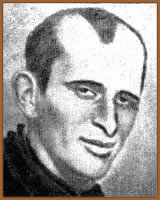
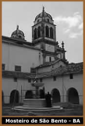

Luis
José Junqueira Freire nasceu em Salvador (BA), no dia 31
de dezembro de 1832. Filho de José Vicente de Sá
Freire e Felicidade Augusta Junqueira, teve a infância e
a juventude comprometidas por problemas de ordem cardíaca,
fato que o levou a concluir os estudos primários de forma
irregular.
Em 1849 matriculou-se no Liceu Provincial, onde
cursou Humanidades e se destacou como um excelente aluno, grande
leitor e poeta. Por pressões familiares e motivado pelas
inconstâncias da própria vida, ingressou na "Ordem
dos Beneditinos" dois anos mais tarde, em 1851.
Nas clausuras do Mosteiro de São Bento de
Salvador, o jovem Junqueira Freire não manifestava a menor
vocação monástica. Este período de
sua vida foi repleto de amarguras, revoltas e arrependimentos
pela decisão irrevogável que tomara. Porém,
pôde fazer suas leituras preferidas e dedicar-se a escrever
poemas, além de atuar como professor atendendo pelo nome
de Frei Luís de Santa Escolástica Junqueira Freire.
No ano de 1853 pediu a secularização
que seria outorgada apenas no ano seguinte. Este recurso que lhe
permitiria libertar-se das disciplinas monásticas, embora
ainda permanecesse sacerdote por força dos votos perpétuos.
Assim, recolheu-se a casa de sua mãe onde redigiu uma breve
autobiografia, que manifestava um agudo senso de auto-análise.
Paralelamente, dedicou-se a reunir uma coletânea de seus
versos, que viria a ser intitulada Inspirações
do Claustro. Esta obra foi impressa na Bahia pouco tempo
antes de sua morte, ocorrida em 24 de junho de 1855, aos 23 anos,
motivada pelas enfermidades cardíacas de que sofreu por
toda a vida.
A figura humana de Junqueira Freire é facilmente
percebida ao analisarmos o conteúdo de sua obra. "Contrário
a si mesmo, cantando por inspirações opostas, aparece-nos
o homem através do poeta romântico", como
o descreveu Machado de Assis. O jovem que sofreu a vida debilitado
em sua saúde, e optou ainda na adolescência por uma
vida clerical, via-se prisioneiro do próprio erro e lamuriava-se
clamando pela morte em seu claustro.
Sua curta e sofrida passagem no mosteiro, forneceu-lhe
os temas mais freqüentes dos versos. Daí provieram
as características principais de sua personalidade jovial,
porém conflitante, que desembocaram em citações
como o prólogo de Inspirações do Claustro:
"Cantei o monge, porque ele é escravo, não
da cruz, mas do arbítrio de outro homem. Cantei o monge,
porque não há ninguém que se ocupe de cantá-lo.
E por isso que cantei o monge, cantei também a morte. É
ela o epílogo mais belo de sua vida: e seu único
triunfo."
Portanto,
fica evidente o teor complexo de sua mensagem poética,
comum aos Românticos e vulnerável à penumbra
do segundo período da geração Romântica
no Brasil. Alguns tópicos como o drama da escolha errônea
em sua vocação, aliada à crise moral e o
conflito interior que o levou a retroceder em sua opção,
refletem no horror ao celibato; no desejo reprimido que o perturbava
e aguçava o sentimento de pecado entre a oração
e a heresia; na revolta contra a regra, contra o mundo e contra
si; no remorso e, como conseqüência, na obsessão
da morte. Um tumulto, um confronto de ideais comprimidos às
celas do mosteiro, externado mas não suprimido. Além
de um sentimento brasileiro que beirava o ufanismo, e uma tendência
antimonárquica, social e liberal.
Teve como obras: Inspirações
do Claustro (1855); Elementos de Retórica Nacional
(1869); Obras, edição crítica por
Roberto Alvim, 3 vols. (1944); Junqueira Freire, organizado
por Antonio Carlos Vilaça (Coleção Nossos
Clássicos, n. 66); Desespero na Solidão,
organizado por Antonio Carlos Vilaça (1976) e Obra
Poética de Junqueira Freire (1970).
Por Spectrum
Obras
Disponíveis:
Poemas